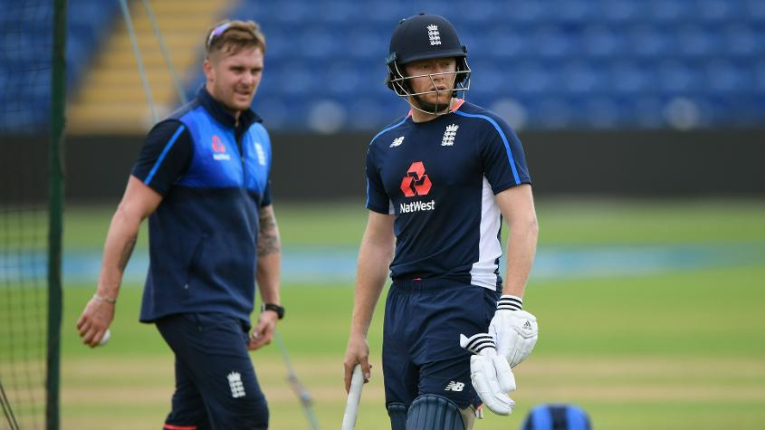

#CT17 Eoin Morgan speaks
#CT17 Eoin Morgan speaks
Morgan hints Bairstow could replace Roy
“Sitting on the sidelines doesn’t seem to affect Jonny,” says England captain in praise
Jonny Bairstow appears likely to replace Jason Roy in the England XI for the first semi-final of the Champions Trophy against Sri Lanka in Cardiff, although Eoin Morgan stopped short of confirming the change.
Bairstow had a hit in the nets on the eve of the match while Roy stood near the boundary ropes, fielding the balls while watching his teammates practise. Roy hasn’t made a half-century in the last nine ODI innings.
“There's a chance we could make a change,” said Morgan on Tuesday. “Obviously we won't announce the team until the toss, but there's a chance there could be a change. I mentioned after the last game that we're getting to the business end of the tournament and we need to produce results. So it's important that we get what we feel is our best XI to win the win the game tomorrow in order to win the tournament.”
The change – if and when it happens – would be well deserved for Bairstow. He has often been a replacement man for England, but has embraced every opportunity; his last four ODI scores are 56, 10*, 72* and 51.
“He's a fantastic batsman,” assessed Morgan. “I think his best attribute, certainly in white ball cricket over the last year and a half, has been his relentless attitude to score runs regardless of the situation. When you have guys sitting on the sideline, they can get a little bit upset, and that can affect their performance when the actual chance comes along. But that doesn't seem to affect Jonny.

“One innings he did play for us, which won us a series was against New Zealand in sort of a match-winning knock. That sort of sums him up. He came from playing in Yorkshire to coming straight into the squad, having played no part in the series, and came in and produced a match-winning knock (81*). I think his all-around ability is as good as we have in this squad. But like I've mentioned before, it's a very difficult team to get into, and you've just got to wait for that chance.”
Bairstow will have a different role on Wednesday, as he is likely to open in international cricket for the first time. He has, however, been a successful opener in domestic cricket for Yorkshire.
Morgan was confident Bairstow would be ready, once again adding, ‘if’ he gets the opportunity. But Mickey Arthur, the Pakistan coach, said it was a change Pakistan wouldn’t mind.
“We had a discussion in the bus this morning. I was particularly worried that Roy hadn't fired yet because I think he's very close to something quite good,” said Arthur. “So if he's not playing, that wouldn't be too bad.